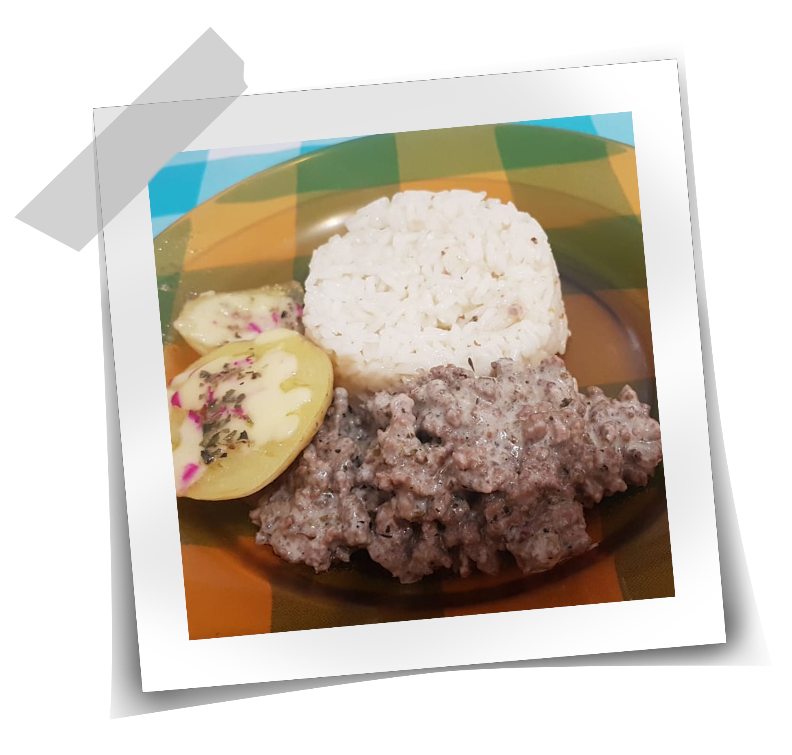

Nosso Livro de Receitas
Aqui você vai encontrar todas as nossas receitas preferidas!
(Em construção)

Arroz Cremoso

Ingredientes:
- 1/2 xícara de arroz;
- 1 colher de sopa de maionese;
- 4 colheres de sopa de mussarela ralada.
Modo de Preparo:
- Prepare o arroz do seu modo de costume e reserve;
- Os próximos passos deverão ser feitos na hora de servir;
- Em fogo baixo misture o arroz pronto aos demais ingredientes até o queijo derreter;
- Modele as porções de arroz utilizando um recipiente pequeno;
- Desenforme no prato e sirva com os demais acompanhamentos.
<- Voltar